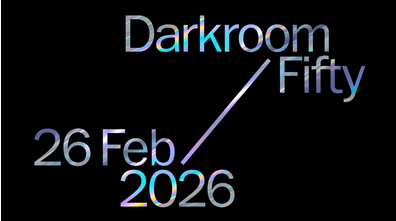

DARKROOM 2026
Celebrating MoCP at 50!
DARKROOM is MoCP’s renowned benefit auction party featuring premier artworks and one-of-a-kind arts experiences by emerging and established contemporary artists from around the world.
Silver Camera Award
Joel Sternfeld
Photography Activation
Marzena Abrahamik
DJ
Alejandro Zerah